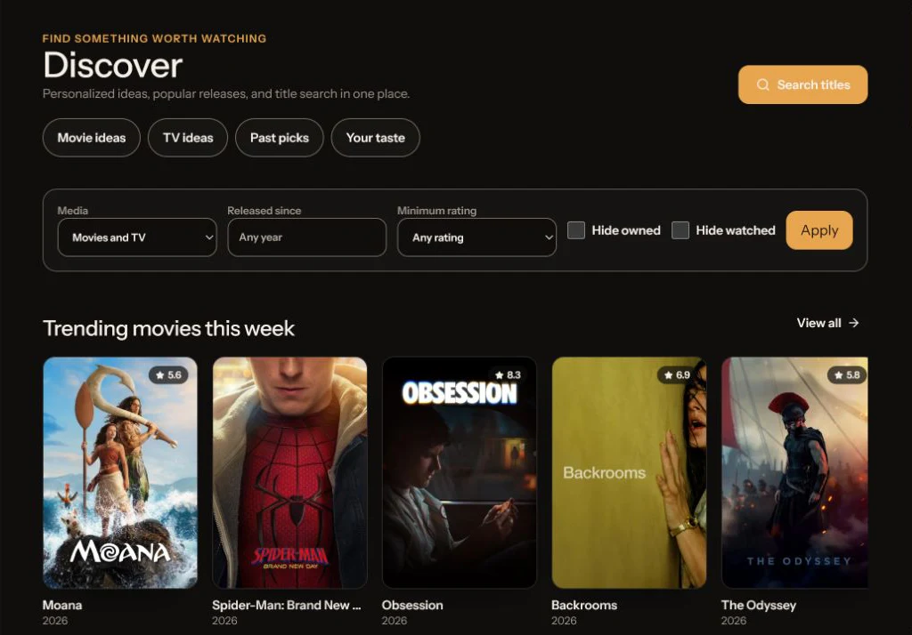

Discover
Find something worth watching.
Search TMDB, browse filtered catalog views, inspect artwork and context, and generate personal ideas through any compatible AI provider.
- Movie and TV title search
- Trending and filtered discovery
- Optional taste-aware recommendations
- Cast, trailers, genres, and providers
